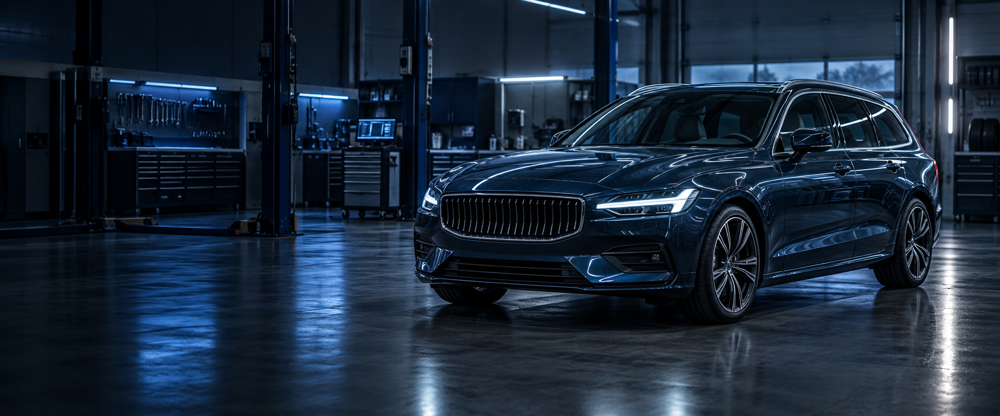

AUTON HUOLLOT & KORJAUKSET
Kaikki olennaiset työt.
Huollot, jakohihnat, korjaukset, ilmastointi, renkaat ja sähköviat.
Kysy huollosta →AUTOKORJAAMO · YLIVIESKA
Volvo-osaamista ja luotettavaa huoltoa kaikille automerkeille Ylivieskassa.

VARAA HUOLTOAIKA
Soita tai jätä soittopyyntö – palaamme asiaan pian.
PALVELUMME
Huollamme ja korjaamme autosi Ylivieskassa – lähellä keskustaa, paloaseman vieressä.
AUTON HUOLLOT & KORJAUKSET
Huollot, jakohihnat, korjaukset, ilmastointi, renkaat ja sähköviat.
Kysy huollosta →Tarkistamme ja vaihdamme huolto-ohjelmien mukaisesti öljyt, suodattimet, hihnat, tulpat ja muut kuluvat osat. Huoltomme säilyttävät tehdastakuut.
Auton jakohihna tulee vaihtaa tavallisesti 60–240 tuhannen kilometrin tai 4–10 vuoden välein. Rikkoutuminen voi johtaa moottorivaurioon.
Teemme myös isompitöiset moottori- ja vaihteistokorjaukset useiden vuosien kokemuksella.
Etsimme sähkövikoja monipuolisella vianlukulaitteistolla sekä huollamme ja korjaamme ilmastointilaitteet.
VOLVO
+ kaikki
merkit
ERITYISOSAAMINEN
Sähköisten laitteiden korjaus kannattaa: uuden osan hinta on usein moninkertainen huollon kustannuksiin verrattuna. Korjaamme myös työkoneiden mittaristoja ja ohjainlaitteita.
Mittaristo- ja ohjainlaitehuolloille annamme yhden vuoden työtakuun alkuperäisen korjatun vian osalta.
Kysy erikoiskorjauksesta →LAITTEET, JOISTA ERITYISOSAAMISTA
Esimerkiksi Volvo, Citroën, Renault, Peugeot, Škoda, Mercedes-Benz, BMW, Saab, Audi, Opel, Ford, Valtra ja Cummins Diesel. Muut mittaristo- ja ohjainlaitehuollot arvioimme tapauskohtaisesti.
HINNASTO
Huollossamme on usein muutaman päivän työjono, joten varaathan ajan hyvissä ajoin.
YHTEYSTIEDOT
Vastaamme huoltoa ja korjausta koskeviin kysymyksiin nopeasti.
HENKILÖKUNTA
Yrittäjä
mika.immonen@pohjanmaan-autohuolto.fiMittaristot ja ohjainlaitteet
toni.hyvarinen@pohjanmaan-autohuolto.fiAjoneuvomekaanikko
Ajoneuvomekaanikko